-
КАНИКУЛЫ - Мужчина хочет устроить своей семье самые длинные в истории каникулы и желает, чтобы все люди на Земле исчезли. Желание сбывается, мир пустеет, но его маленький сын мечтает, чтобы люди вернулись.
Автор - Брэдбери Рэй Дуглас Дата первой публикации : декабрь 1963 г. Прочесть -
Землянин - Непонятное и пугающее настигает простого земного парня и моментально швыряет его на инопланетное социальное дно. Цикл «Землянин» Романа Злотникова рассказывает о борьбе за выживание молодого человека и его иноземных приключениях.
Автор - Роман Валерьевич Злотников Дата первой публикации : 2012 г. Прочесть
-
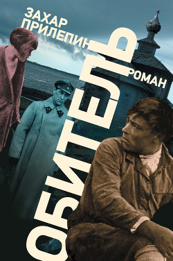
ОБИТЕЛЬ - «Оби́тель» — исторический роман русского писателя Захара Прилепина, повествующий о жизни заключённых в советском Соловецком лагере особого назначения в конце 1920-х годов.
Автор - Захар Прилепин Дата первой публикации : 2014г Прочесть -
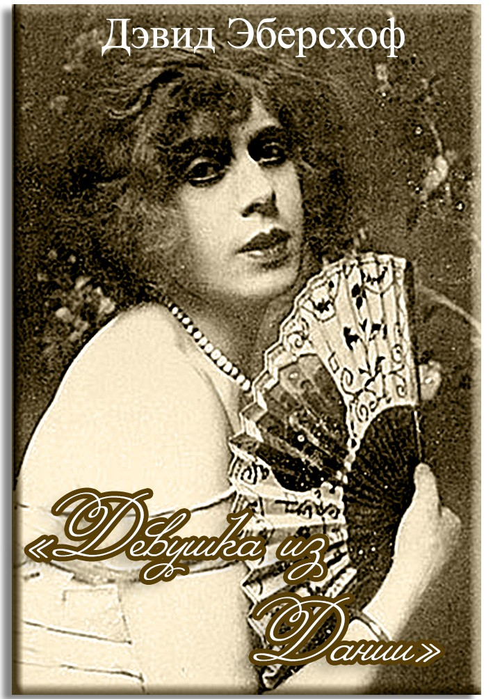
ДЕВУШКА ИЗ ДАНИИ - Копенгаген, середина 1920-х годов. Художники Грета и Эйнар Вегенер в браке уже шесть лет. Грета рисует портреты знаменитостей, а Эйнар – миниатюрные пейзажи.
Автор - Дэвид Эберсхов Дата первой публикации : 2000г Прочесть
-
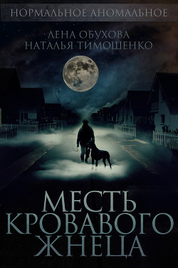
МЕСТЬ КРОВАВОГО ЖНЕЦА - В Богородском районе Нижегородской области много лет существует легенда о Кровавом Жнеце. Когда-то он был осужден за колдовство, а потом якобы вернулся с того света, чтобы отомстить своим палачам, да с тех пор так и бродит по округе, пугая по ночам припозднившихся прохожих.
Автор - Наталья Тимошенко Дата первой публикации : 2016г Прочесть -
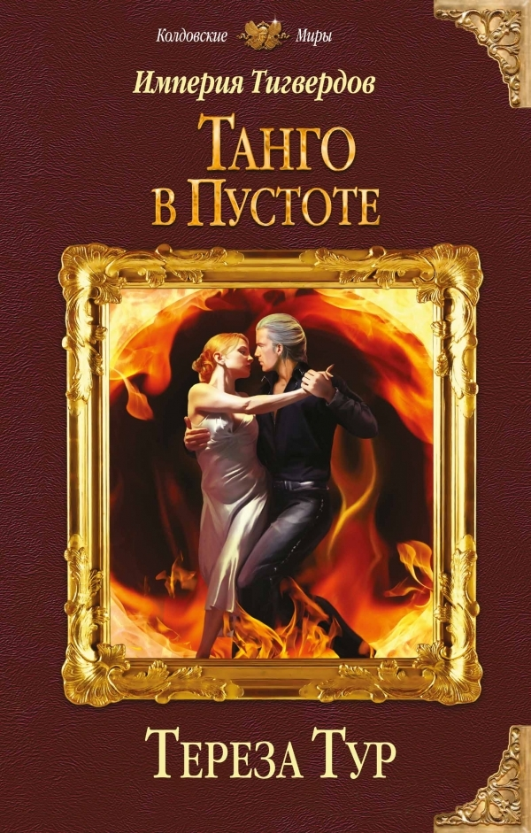
Танго в пустоте - Никогда не знаешь, что ждет тебя накануне свадьбы – жаркие объятия любимого или смертельное заклятие магической метели. Никогда не знаешь, чему больше обрадуются родители: твоему возвращению на работу в Академию МВД или визиту императора, главы державы из другого мира.
Автор - Тур Тереза Дата первой публикации : 2017 год Прочесть
-
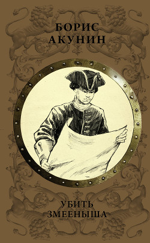
Убить змееныша - «Он вдруг увидел перед собой всю свою длинную-предлинную жизнь как одну краткую седмицу: с трудоначальным понедельником, юновесенним вторником, мужественной середой, сильным четвертком, зрелой пятницей, грозовой субботой и тихим, светлым воскресеньем…»
Автор - Акунин Борис Дата первой публикации : 2017 год Прочесть
-
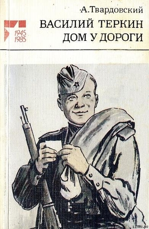
Дом у дороги - Главный герой Андрей — русский крестьянин, ставший солдатом.
Автор - Твардовский Александр Трифонович Дата первой публикации : 1984г Прочесть
-
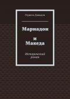
Мариадон и Македа - Исторический роман «Мариадон и Македа» повествует о визите царицы Савской в Иерусалим
Автор - Герцель Давыдов Дата первой публикации : 2016г Прочесть
-
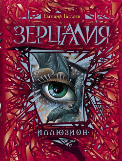
Иллюзион - …Иногда в нашу жизнь вторгается волшебство. Таинственные скрипы, странные шорохи в пустых комнатах…
Автор - Евгений Гаглоев Дата первой публикации : 2013г Прочесть
-
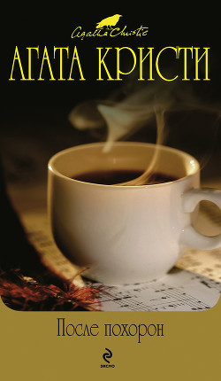
Черный кофе - «Чёрный кофе» — пьеса британской писательницы детективного жанра Агаты Кристи, написанная в 1929 году и впервые вышедшая в 1930 году.
Автор - Кристи Агата Дата первой публикации : 1930г Прочесть
-
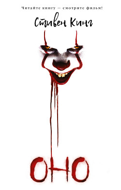
Оно - «Оно́» — роман американского писателя Стивена Кинга, написанный в жанре ужасов, впервые опубликованный в 1986 году издательством Viking Press.
Автор - Стивен Кинг Дата первой публикации : 1986 Прочесть
-
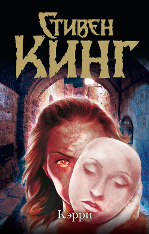
Стивен Кинг - «Кэ́рри» — первый опубликованный роман американского писателя Стивена Кинга, написанный в жанре мистического ужаса.
Автор - Стивен Кинг Дата первой публикации : 1974 г. Прочесть -
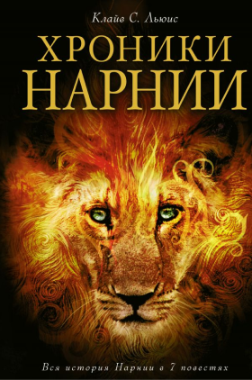
222Хроники Нарнии - серия из семи книг для детей и взрослых, написанных Клайвом Стейплзом Льюисом в 1950-х годах.
Автор - Клайв Стейплз Льюис Дата первой публикации : 1950 год Прочесть